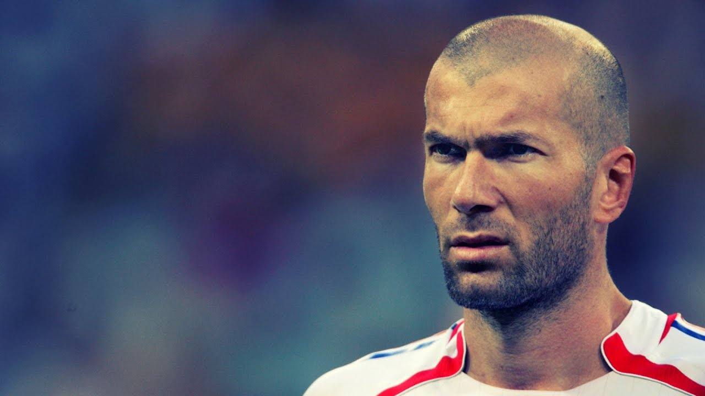

zinedine zidane
GOAT
지네딘 지단은 "지주" (Zizou)의 별칭으로 잘 알려진 프랑스의 전 축구 선수이자 현 감독이다. 그는 프랑스 국가대표팀, 칸, 보르도, 유벤투스, 그리고 레알 마드리드에서 공격형 미드필더로 활약했다. 일류 플레이메이커로 우아함, 시야, 공 제어력, 그리고 기술로 알려졌으며, 지단은 2004년 UEFA 골든 주빌리 여론 조사에서 근 50년 간의 최고 유럽 축구 선수로 선정되었다. 그는 역대 최고의 선수들 중 한 명으로 손꼽히기도 한다.